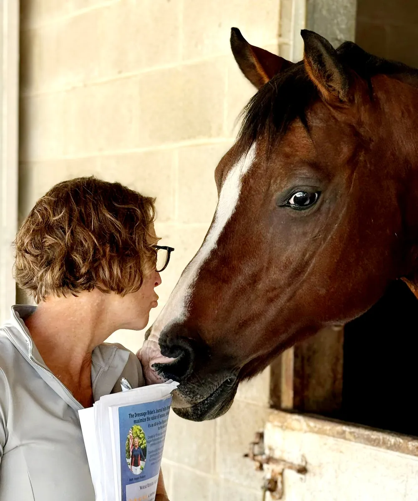
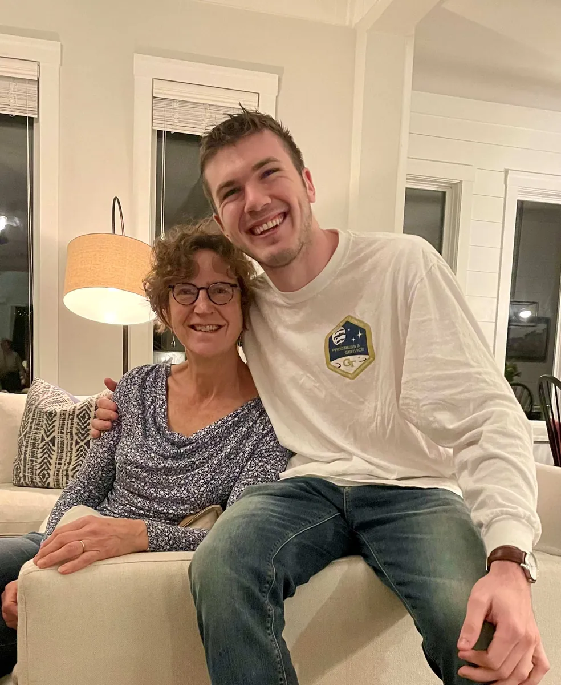

I've been riding for more than fifty years. Doing dressage seriously for more than thirty. Like a lot of adult amateurs, I think about my riding constantly. While in the car, in the shower, and definitely during meetings I should be paying attention to.
I started journaling about my rides. On paper. This felt productive, until I went back to read it and realized it was mostly a collection of "felt good" and "ugh, the changes!" Not exactly revelatory.

Me, Rocket Star, and the paper journal that started it all.
Photo: Kristin DeBates
So I did what anyone who has spent a career in databases and "working smarter, not harder" would do. I built myself a Google Form. I was pretty happy with it. It had fields, I captured ratings, and I was able to complete it at the barn, on my phone. Suddenly, my journaling had structure, data was accumulating, and I could revisit it. But, I hit a wall when I tried to analyze it. I used all my many spreadsheet skills: cross-tabs, pivot tables, text search. It was hours of drudgery, and not very revealing.
The data was there. The meaning wasn't. I was disappointed.
Then I fed it all to AI.
On a whim, really. I had no expectations. And I was blown away.
Two things surfaced that I genuinely could not have seen on my own. The first one was humbling. I had completely forgotten the insights from a biomechanics clinic I'd attended. The AI pulled the thread across months of entries and handed it back to me: here, you learned this, and then you stopped using it. Ugh! How many other great insights had I forgotten?
The second left me scratching my head. I ride multiple horses. The AI told me clearly, in the data, that I was measurably more confident on my Welsh Cob, Pony, than on Rocket Star. Rocket Star, my fancy Westfalen in training. Yet Pony was where I felt safe.
I had been riding both horses for years. I had not seen that pattern. No spreadsheet had told me. No journal had surfaced it. The AI did.
That's when I knew there was something here.
Then three things collided.
I had just finished a year working with a sports psychologist. I gained a new understanding of the mental aspects of the sport. I wanted to remember the concepts and use them consistently.
I was preparing a goals setting workshop for my local dressage club. And a friend of mine and I were having a conversation about building a dressage game for the icebreaker. She joked that any game about dressage would have to work like Chutes and Ladders. That both made me laugh and sparked an idea about reflecting on the journey as essential to the learning process.
The reflection prompts I developed for the game and the player's responses to them gave me an idea. What if I brought all of it together into one platform that did what my whim had accidentally done? Pull the threads. Surface the patterns. Make the meaning visible.
Cue a timely call with my nephew Tanner, a data engineer, who told me I could actually build the thing. He gave me the confidence to code. Claude gave me the tools to do it. Without those two, the idea would still be a folder of reflection prompts on my desktop.

Me and Tanner, my nephew who gave me the courage to go for it.
Photo: Kristin DeBates
That was the genesis of Your Dressage Journey.